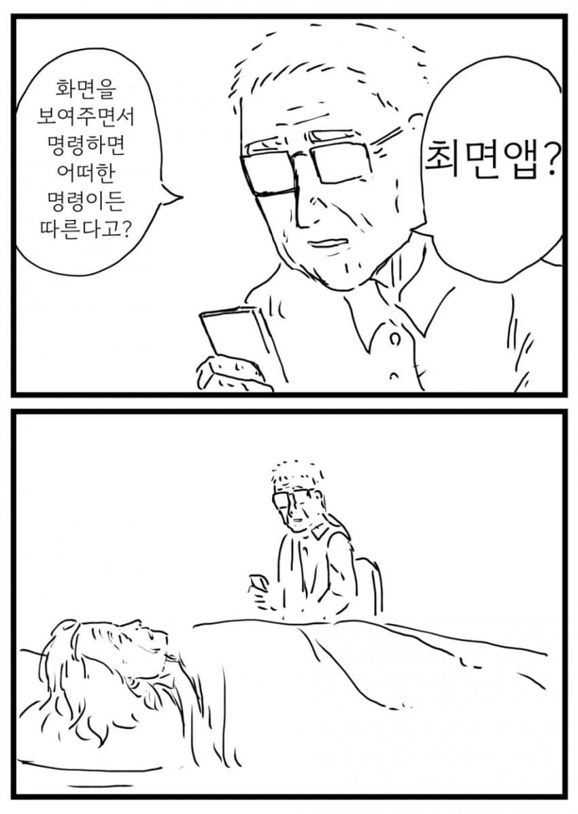
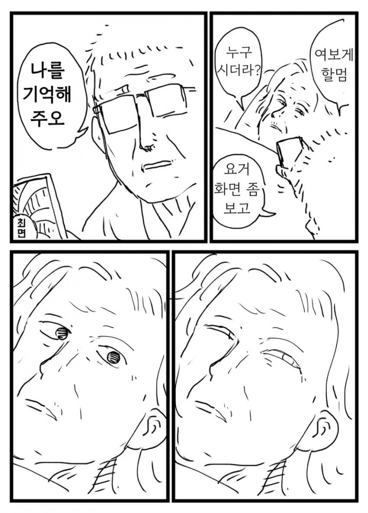
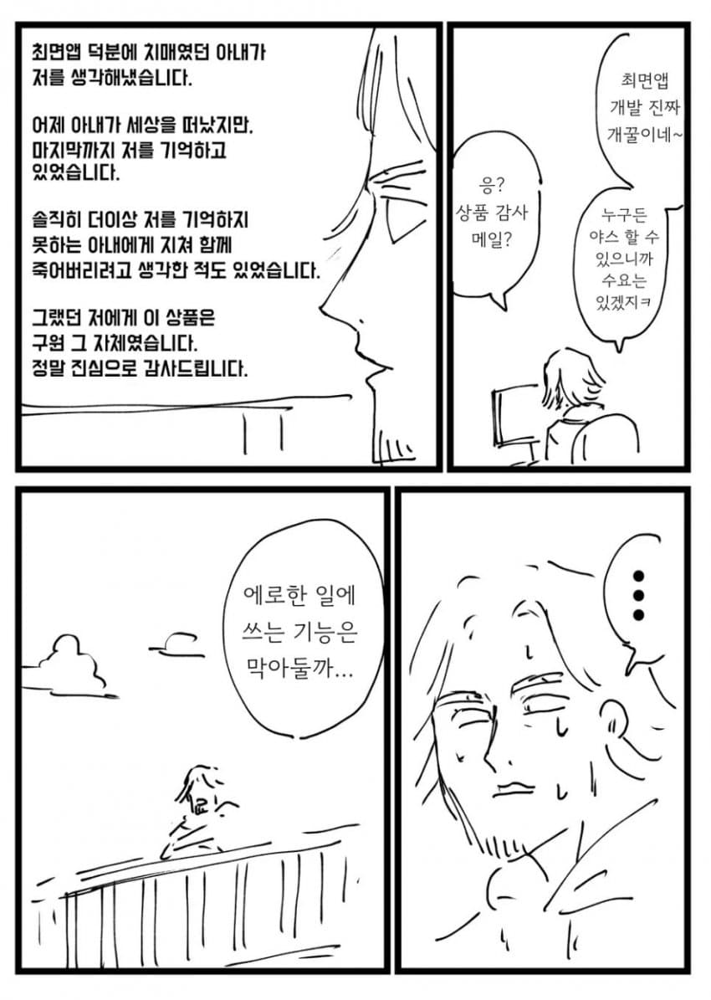
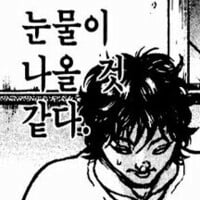
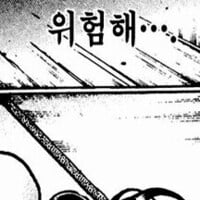

리뷰(수정됨)
나한테 최면앱이 생긴다면 롤링에게 공식버전 악역영애 말포이를 쓰라고 명령하겠어. 참고로 ts된 말포이는 불의 잔 무렵까진 빈유 슬렌더지만 후반부로 가면 폭풍 성장하는 타입이야.

음 후반 왕귀형 가슴
"아시발 말포이 누가 키웠냐"
푸틴하고 질렌스키를 서로 사랑하게 만들면
누가 수비인지도 정해야함
안그럼 지들끼리 정하다가 또 싸움남
푸틴에게 후장도 첫키스도 모두 다 내준 쇼이구는 어찌하란 말이냐
치매에서 나아라 했으면 안됐나
어차피 구라인데 행복한쪽으로 보자고
죽지말라고 했으면 안죽었을텐데



사실 할매 할배가 정말 모르는 사이였다면?
최면앱으로 할배랑 부부였다고 착각하고 살다 죽은거였다면?
어림도 없지
바로 다음 리뷰에 108명의 여친 후기